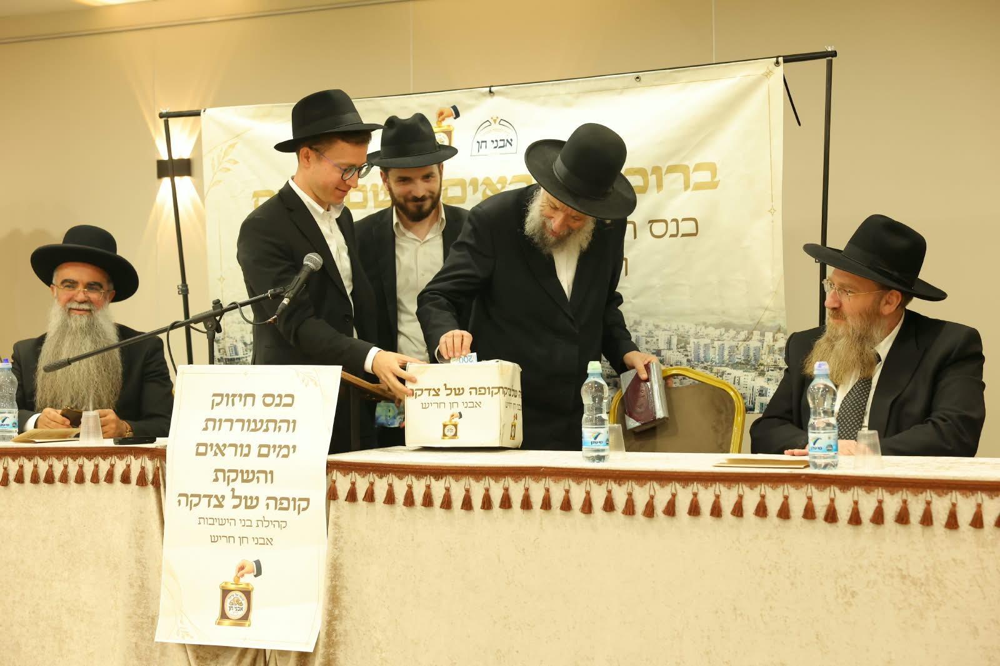
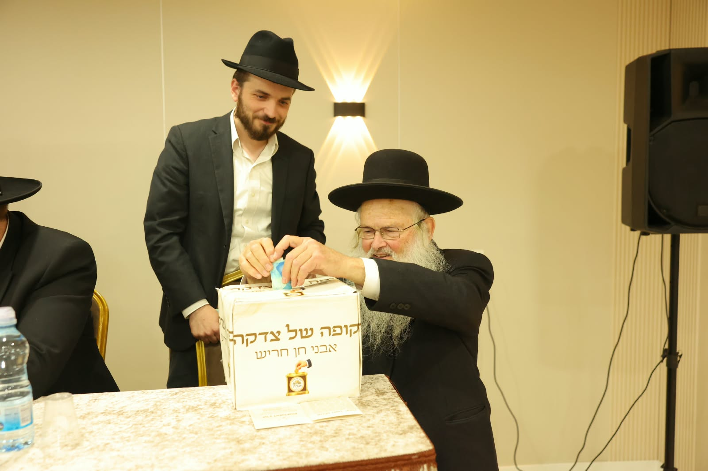
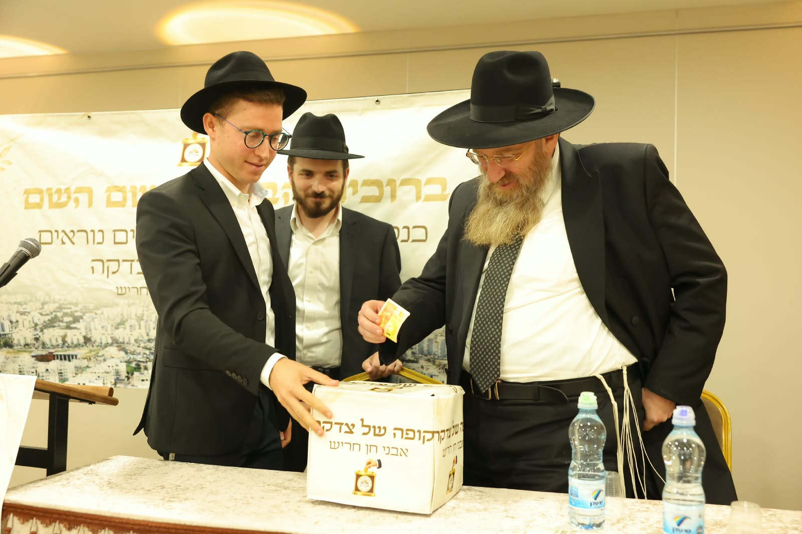
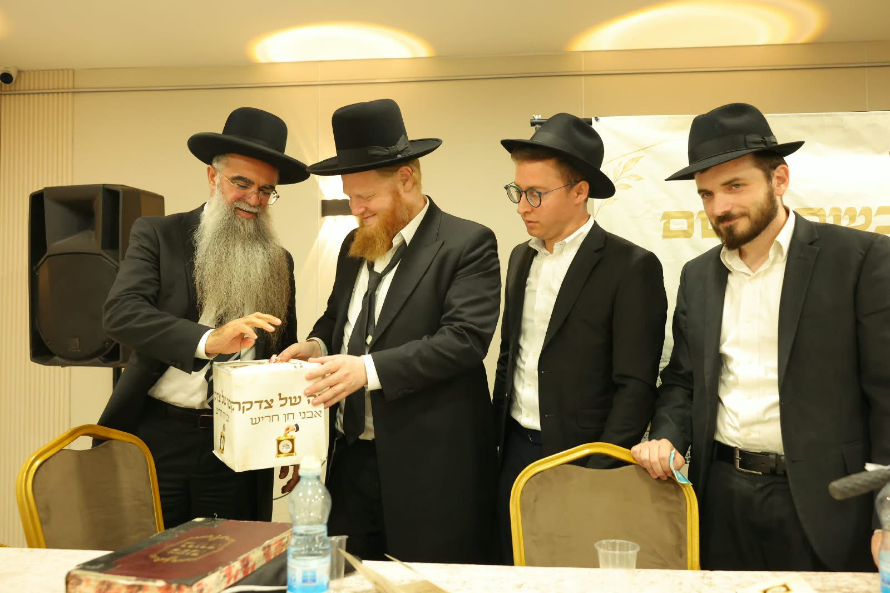

כנס חיזוק עשי"ת והשקת קופה של צדקה אבני חן
מעמד חיזוק והתעוררות והשקת קופת הצדקה בקהילה הליטאית אבני חן בחריש, בהשתתפות רבנים ובראשם הגאון הגדול רבי יצחק קולדצקי שליט״א וכן רב העיר הרב זיגדון שליט"א.

התפתחות דרמטית בקהילה הליטאית בשכונת אבני חן בחריש.
מאות השתתפו במעמד חיזוק והתעוררות לקראת יום הכיפורים והשקת קופת הצדקה ׳אבני חן׳ ומערך התמיכה הקהילתי בשכונה.


